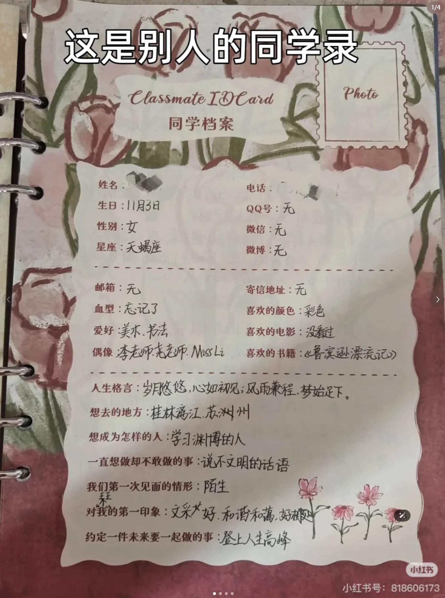
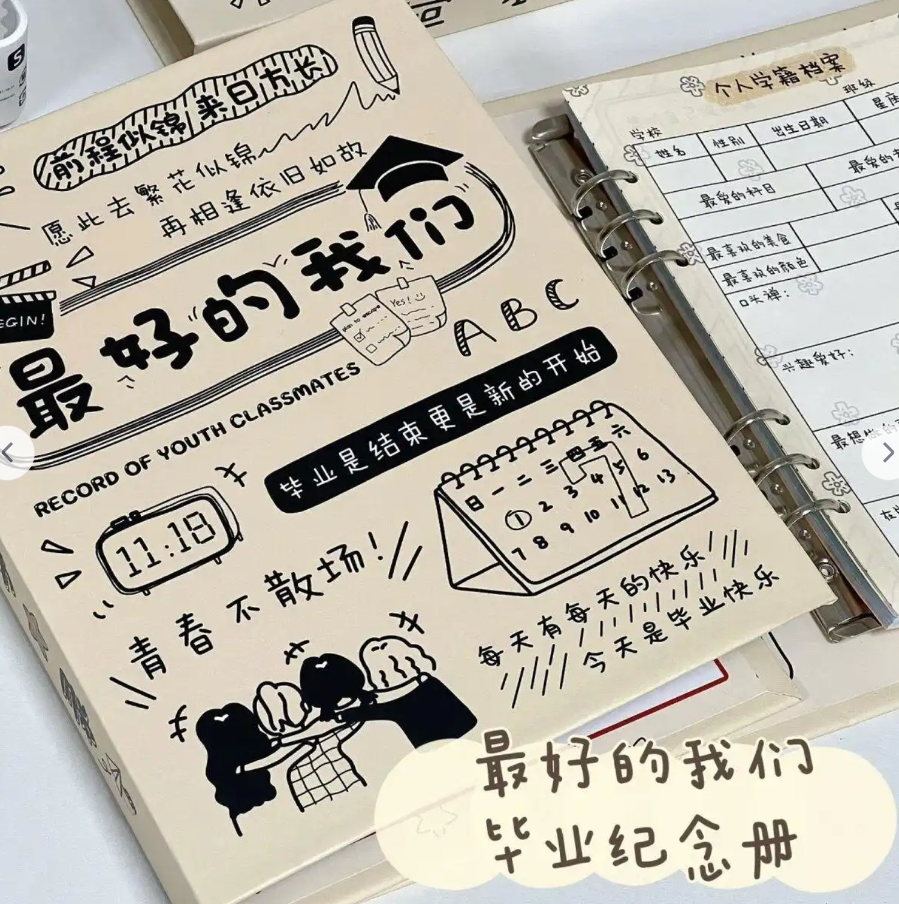
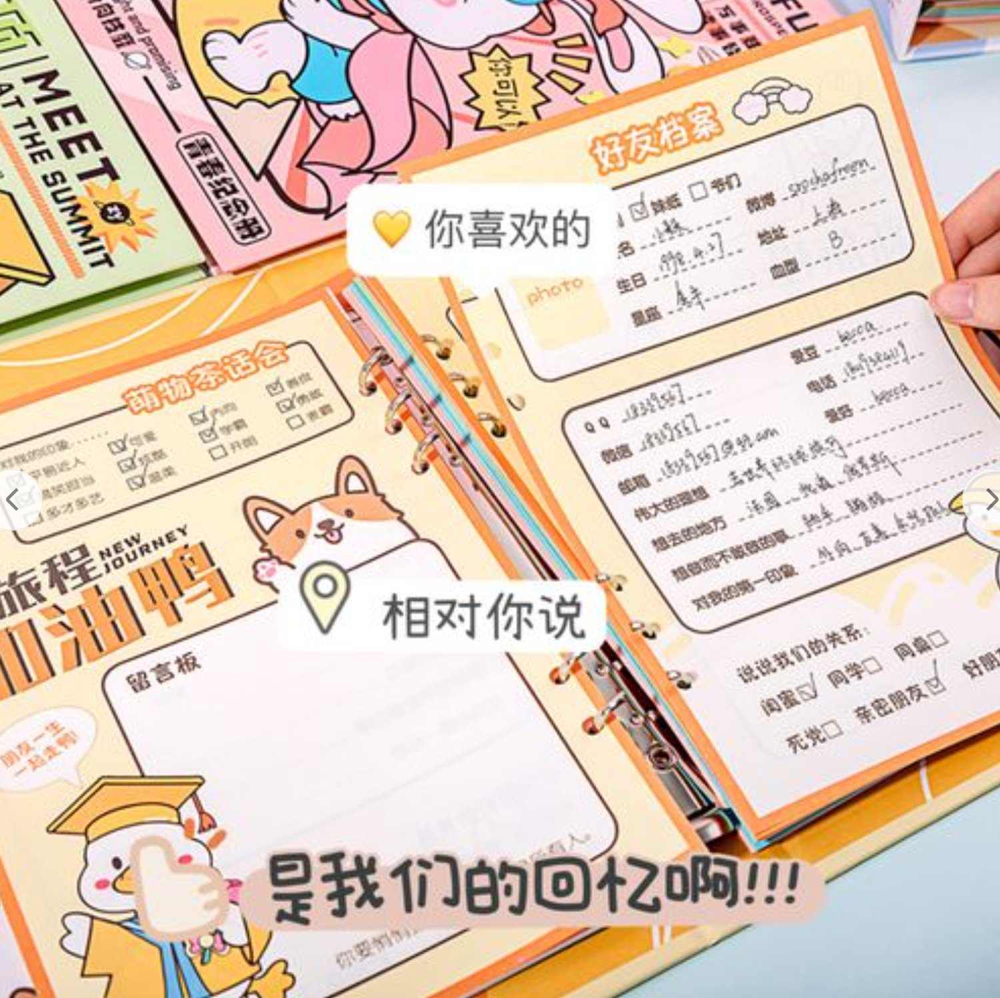
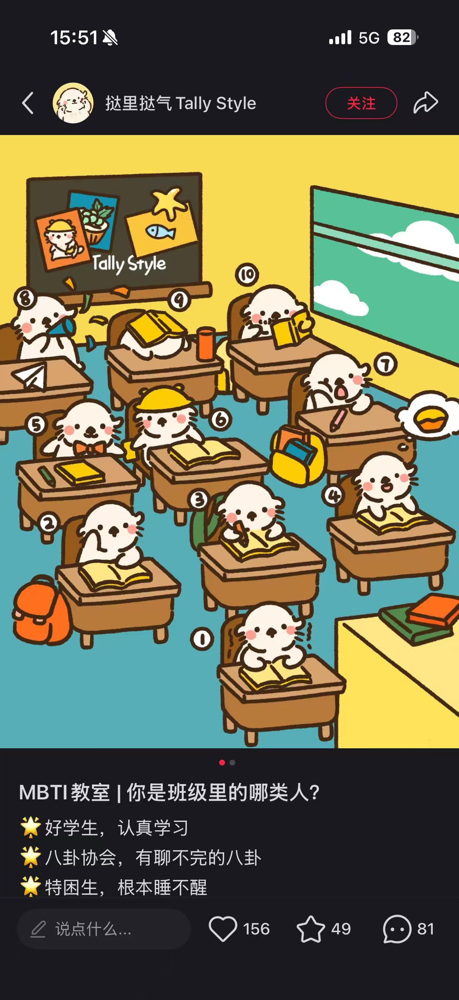
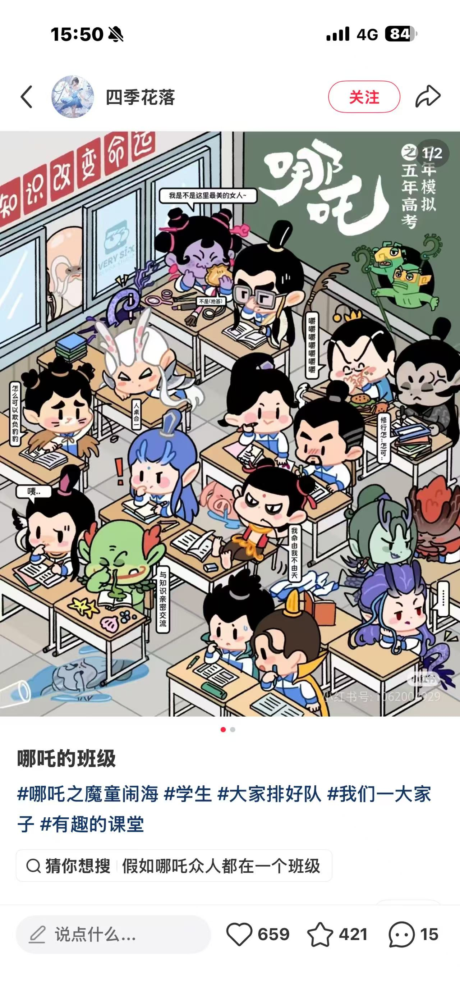
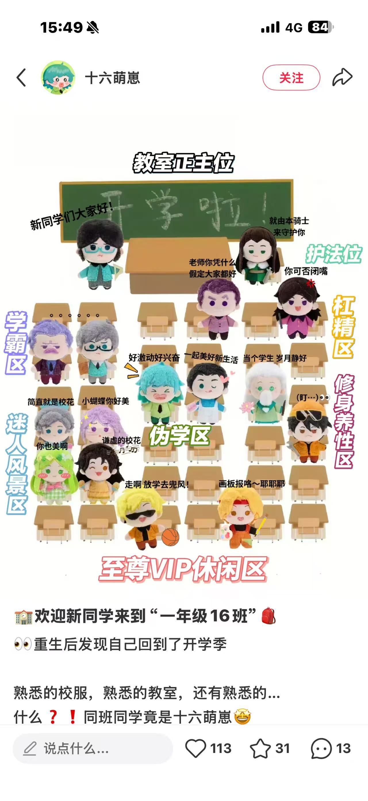
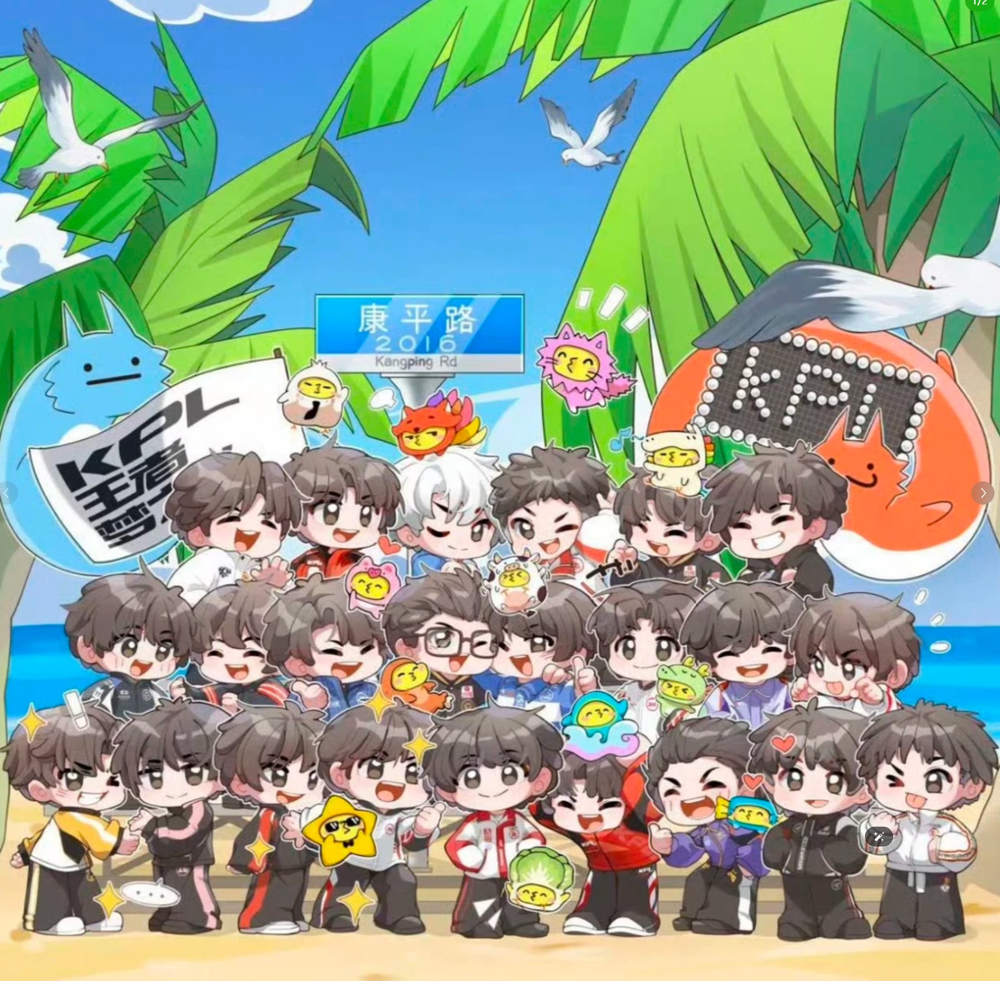
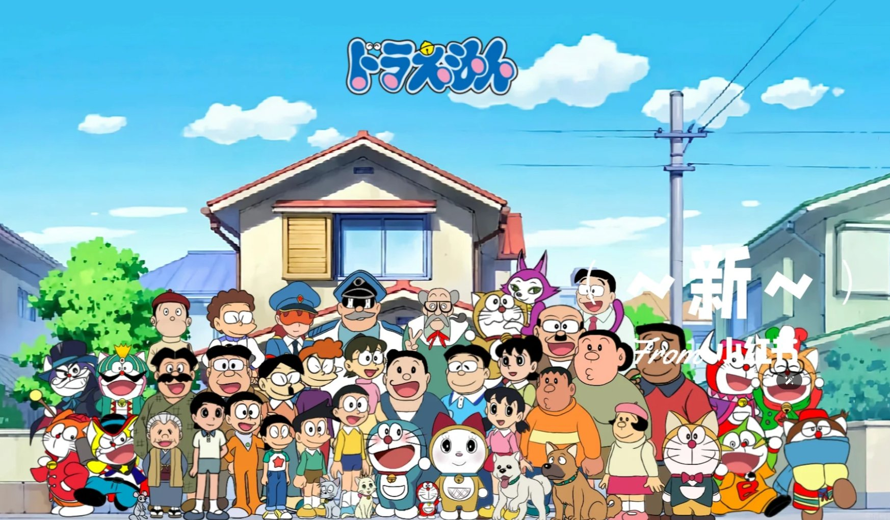

一句话概念：进来就是你自己的那一页「同学档案」——昵称、血型、星座、最喜欢的、最讨厌的，那套全班都填过的经典格式，全部换成游戏版、由你的数据自动填好。填完把本子传出去，好友像当年一样填下自己那一页、再给你写两句；你翻开这本，一页一位同学，既能看他写给你的话，也能看他自己的档案。



| 阶段 | 玩家看见什么 | 这一步表达什么 |
|---|---|---|
| 登录授权 | 登录并授权游戏数据，系统自动认领你上过的所有"班" | 一次授权，横跨你玩过的每款天美游戏 |
| 总档案页 | 第一页是总档案：TiMi 学龄、上过几个班、主修科目、累计在校时长 | 零门槛直达，一屏说清"你和 TiMi 的 18 年" |
| 翻到各科档案 | 每款玩过的游戏各一页：入学日期、上课时长、最高学历、称号 | 一页一门课，多游戏玩家越翻越有面子 |
| 补几笔手写 | 最讨厌的、最想回去的地图、最佳同桌等格子由你自己填 | 数据填不了的，交给玩家自己写更真 |
| 传出去求留言 | 分享给好友，好友进来填自己那一页档案 + 给你留言（标签一键点 + 也能打字） | 还原递本子的动作：留言必带对方档案 |
| 翻开我的同学录 | 一页一位同学：上半是他写给你的话，下半是他自己的完整档案 | 留言是客套，档案才是真人——窥视欲拉满 |
| 领奖 & 逛别人的 | 完成分享可领游戏内奖励；陌生人也能翻进来看你的档案与标签（私密留言不外露） | 分享有实利驱动，互访形成网络 |
同学录那套人人填过的格子原样保留，内容全部换成游戏版。
| 经典格式 | 天美同学录版 | 数据来源（全游戏通用） |
|---|---|---|
| 昵称 | 你的第一个昵称 | 首次使用昵称（D07）／各游戏角色昵称 |
| 生日 | 入学日期：2015.08.12 | 首次登录精确日期（D04） |
| 学龄 | X 年 TiMi 龄 | 首次登录年份（D01）／注册天数 |
| 就读班级 | 你上过 X 个班（玩过几款天美游戏） | 有效登录游戏个数（D03） |
| 主修科目 | 你最"专精"的那一门 | 资历最长／时长最高游戏（D02） |
| 上课总时长 | 累计在校 X 小时 | 总游戏时长／累计活跃时长 |
| 出勤次数 | 你一共来上过 X 次课 | 累计登录次数（D05） |
| 全勤纪录 | 最长连续来了 X 天 | 最长连续登录天数（D11-2） |
| 课堂表现 | 单次最久待了 X 小时 | 单日最长在线时长（D13） |
| 上课习惯 | 平均每次待 X 分钟 → 沉浸式／量子速读 | 平均单次在线时长（D11-3） |
| 座右铭 | 你的开局口头禅 | 预设梗任选／自行填写 |
| 经典格式 | 天美同学录版 | 适用品类 |
|---|---|---|
| 血型 | 战斗血型 | 竞技类：由总对局数 + 胜率／KDA 生成；休闲类：由通关数 + 最高分生成 |
| 星座 | 本命座：峡谷座／漂移座／枪林座／消除座 | 全品类（按主玩游戏归类，人人都有） |
| 最高学历 | 历史最高段位／最高分／主城等级／角色等级 | 按品类自动换算：竞技→段位；休闲→最高分；策略→主城/君主等级；MMO→角色等级/战力 |
| 获奖记录 | 你拿过的称号／勋章 | 有称号系统的游戏（元梦、天天爱消除、枪神记等） |
| 最喜欢的东西 | 十年没换过的本命 | 有角色/车型/职业概念的游戏 |
| 熬夜纪录 | 深夜车神：X 点还在上课 | 最深夜登录（D11-1，DC 标"还是想搞"） |
| 节假日出勤 | 除夕/周年庆你也来了 | 特殊节日登录（D12-3） |
| 经典格式 | 天美同学录版 | 填写方式 |
|---|---|---|
| 最讨厌的东西 | 最想删掉的那张图／最烦的对手 | 玩家从预设池选（娱乐向） |
| 想去的地方 | 最想再回去一次的地图 | 玩家从预设池选 |
| 一直想做却不敢做的事 | 一直想上但不敢上的段位／一直想通但没通的关 | 玩家从预设池选 |
| 最佳同桌 | 你的最佳车友／最佳搭子 | 从好友列表选（D08 算不了，改人工指定，不手打姓名） |
| 说说我们的关系 | ☑固定队友 ☑野排捡的 ☑现实同学 ☑只在开黑时说话 | 好友勾选 |
| 对你的印象 | ☑下把还带我 ☑技术不错但别再抢我蓝 ☑野王 ☑挂机常客 | 好友勾选 |
| 约定一件未来一起做的事 | 「明年一起上王者」／「明年这关一起通」 | 好友从预设池选 |
| 给你的留言 | 同学留言区 | 好友 UGC（自由打字，仅双方可见，见设计点 5） |
三处与数据表对齐的修正：① 「最佳同桌」原打算取组队数据（D08），但数据侧反馈算不了，已改为从好友列表指定；② 「一直想做却不敢做的事」原写死"段位"，现改为按品类自适应（段位／关卡／分数）；③ 档案内所有玩家填写格一律走预设池选择、不做自由输入——因为档案对陌生人可见，预设池能把审核压力降到零（详见设计点 5）。
27 款游戏塞进一页会爆掉，且每个玩家玩的游戏组合都不同。所以档案分两层——这也顺带解决了"品类差异"和"授权游戏数不定"两个问题：
| 层级 | 内容 | 数据口径 |
|---|---|---|
| 第 1 页 · 总档案 （人人都有） | TiMi 学龄、上过几个班、主修科目、累计在校时长、总出勤次数、全勤纪录 | 跨游戏汇总（横向对比取最大／加总） |
| 第 2~N 页 · 学科档案 （按授权的游戏各一页） | 该游戏的入学日期、昵称、上课时长、最高学历（段位/最高分/主城等级自适应）、称号 | 单游戏数据 |
| 好处 | 说明 |
|---|---|
| 抗缺失 | 某款游戏数据缺失，只是少一页，总档案照样完整——不会整页开天窗 |
| 顺应品类 | 每张学科档案只展示这门课有的字段，不必强行给天天爱消除编一个段位 |
| 天然贴合同学录 | 同学录本来就是一页一页的，"我上过 5 个班"比"我玩过 5 款游戏"更有校园感，也让多游戏玩家更有得炫 |
还原真实同学录的机制：本子递过去，同学填的是自己的档案，再给你留一句。所以好友来留言时，会一并留下自己的档案——他的血型、星座、最喜欢的、最讨厌的，全都跟着留言一起交到你手上。
| 要点 | 说明 |
|---|---|
| 既定标签一键点 （原型见参考图三） | 真实同学录里就有"对我的印象 ☑可爱 ☑学霸"这种勾选栏——我们把它改成游戏版：☑下把还带我 ☑技术不错但别再抢我蓝 ☑野王 ☑挂机常客。点一下就完成，手懒的人也留得下痕迹 |
| 自行打字 | 留给真的有话想说的人，产出只属于你的那段文字 |
| 档案随留言同步 （重要） | 好友留言时顺手填/生成自己的档案卡，直接同步进你这本。你翻的时候不只看到"他说了什么"，还能看到"他是个什么人" |
| 为什么这么设计 | ① 只允许打字会导致大面积空白页——空同学录比没有同学录更伤人，标签保转化、打字保质量；② 档案同步让每条留言的信息量翻倍，留言是客套，档案才是真人 |
| 要点 | 说明 |
|---|---|
| 翻页动效 | 一页一位同学，翻页带实体手感，把"刷列表"变成"翻本子" |
| 每页 = 留言 + 对方完整档案 | 翻开一页，上半是他写给你的话，下半是他自己那份档案——"原来他最讨厌的是这张图""他居然是漂移座"，窥视欲比看留言强得多 |
| 版式已有现成原型 | 参考图三就是这个结构：一侧「好友档案」（昵称/生日/血型/星座/想去的地方/对我的第一印象），另一侧「留言板」+「说说我们的关系 ☑闺蜜 ☑同学 ☑同桌」。我们照这个分区做数字化即可 |
| 互访成网 | 你能看别人的，别人也能看你的。从单人页升级成一本人来人往的册子，PV 与停留时长的量级完全不同 |
对陌生人的体验定位是——"给你看我的同学录档案"，不是围观别人的私聊。所以按"是否参与过"分两档可见：
| 内容 | 档案主本人 | 留言过的同学 | 陌生人（仅浏览） |
|---|---|---|---|
| 档案主的完整档案 （学龄/班级/最高学历/称号等） | ✅ | ✅ | ✅ |
| 留言人的档案卡 （他的血型/星座/最高学历等） | ✅ | ✅ | ✅ |
| 快速留言标签 （预设池，如 ☑下把还带我） | ✅ | ✅ | ✅ |
| 自由打字的留言内容 | ✅ 全部可见 | ✅ 仅自己写的那条 | ❌ 不可见 |
| 为什么这样切 | 说明 |
|---|---|
| 审核压力锁在最小面 | 自由文本是唯一需要审核的部分，而它恰好是唯一不对外的部分——预设标签是白名单、结构化档案是系统生成，都不需要审核。等于接基础 ACE 审核即可支撑陌生人互访 |
| 互访成网仍然成立 | 陌生人翻进来看到的是"一本填满档案的同学录"，档案 + 标签本身信息量已足够勾人（"这人 11 年 TiMi 龄、上过 7 个班"），窥视欲不依赖私密留言 |
| 私密感反而更强 | 自由留言只有你和写的人能看见，还原了同学录"有些话只写给你"的质感，也让玩家更敢写 |
一句话概念：进来是一间能自由 DIY 的教室，你亲手把喜欢的游戏角色同学安排到各个座位，再用自己的微信/QQ 头像坐进去，谁当你同桌全凭你——最后晒出的是一张坐满人的专属班级图。



| 阶段 | 玩家看见什么 | 这一步表达什么 |
|---|---|---|
| 进入教室 | 一间空座待填的插画教室，风格治愈 | DIY 归属感：这是我的班 |
| 测出我是谁 | 先做一套超简单的趣味测试题，系统生成一个"本命同学形象"坐进班里（可一键随机 roll 换形象） | 替代平庸的微信/QQ 头像，一进场就有专属人设 |
| 抽卡集素材 | 用"通票"抽角色同学、梗道具、装饰贴纸，攒满自己的素材池 | 抽卡爽感 + 收集欲，边玩边解锁摆位素材 |
| 安排同学 | 把抽到的角色同学、本命形象自由安排入座 | 和角色同框养成，摆位藏私心 |
| 整活装饰 | 往教室里丢各种"奇奇怪怪的道具"（峡谷的草、飞车的车、酷跑的金币…）当摆件/课桌装饰 | 可整活空间拉满，每张班级图都独一无二 |
| 座位留言板 | 点座位背后 = 该角色的同学录游戏数据 | 数据自然藏进互动，不生硬 |
| 分享班级图 | 生成满员班级插画，别人点进来研究你的摆位 | 摆位即社交梗，谁同桌 = 无声告白 |
班级里能摆的所有素材（角色同学、梗道具、装饰贴纸）都进一个素材池，玩家用「通票」以抽卡的形式解锁。
| 要点 | 说明 |
|---|---|
| 通票怎么来 | 访问登录、分享给好友、第一次摆放并保存成功……用轻量游玩任务赠送，随玩随得 |
| 核心原则 | 不设"必须连续多天才能抽满"——玩家在当天正常游玩的节奏里就能把素材池全部抽满，通票节奏跟着"玩"走，而非逼签到 |
| 为什么这么设计 | 抽卡给收集爽感和惊喜感，但门槛压到最低：要的是"玩得停不下来"，不是"被打卡绑架"。素材全解锁，创作空间才拉满 |
不再直接抓玩家的微信/QQ 头像贴进班里（太平庸、没记忆点），而是让玩家做一套超简单的趣味测试题，系统据此生成一个专属"本命同学形象"坐进教室。
| 环节 | 说明 |
|---|---|
| 题目调性 | 参考 MBTI 那种轻松娱乐向，题目简单、答起来没压力、结果好玩有梗（题目待细化） |
| 示例方向 | 「开黑时你更常喊哪句？」冲/稳一手/这把我carry/队友别送了；「深夜上线你在干嘛？」冲分/挂机聊天/做任务/随便看看；「组队你习惯的位置？」带头冲/辅助保人/打野游走/猥琐发育 |
| 生成 + 随机 roll | 答完题生成本命形象；同时给一个「随机 roll」按钮，不满意可随手 roll，roll 到喜欢的再定妆入座 |
| 价值 | 把"贴头像"这个平庸动作升级成"测出一个专属自己的班级形象"，参与感 + 传播点兼得，每个人形象都不一样，天然想晒 |
一句话概念：做成一段仿 galgame 的校园剧情：上学路上遇到谁、中午和谁拼桌、体育课怎么过……你一路选择，全程按你真实玩过的角色动态生成，放学班长小云仔开班会发同学录，才揭晓你的数据和一张 AI 毕业合照。


| 阶段 | 玩家看见什么 | 这一步表达什么 |
|---|---|---|
| 剧情开场 | 上学路上遇到谁（4 选项，按真实玩过的角色动态生成） | 选择即个性化，人人剧情不同 |
| 一日推进 | 中午拼桌、体育课等分支剧情逐段展开 | 沉浸代入，边玩边攒青春回忆 |
| 班会揭晓 | 放学班长小云仔开班会，发"同学录"揭晓数据 | 悬念留人：数据结尾才揭晓 |
| 合照整活 | 排合照时可给角色塞"梗道具"、摆抽象姿势、加彩蛋贴纸（峡谷草、飞车、金币等） | 合照千人千面，整活越狠越想晒 |
| 毕业合照 | 生成"自选站位 + AI 换风格的毕业大合照" | AI 合照强出片，分享欲拉满 |
| 方案 | 一句话 | 核心画面 |
|---|---|---|
| 一 · 天美同学录 | 当年那本传遍全班的同学录，这次写的是你和 TiMi 的 18 年 | 个人同学档案页 + 好友填档案留言 + 一页一人的翻页本 |
| 二 · DIY 班级空间 | 你喜欢的角色都来了，就差你自己坐进来 | 坐满角色同学的插画教室，座位可自由布置 |
| 三 · 伪 Galgame 校园测试 | 选择你的一天，我们还你一整个青春 | galgame 校园剧情 + AI 毕业大合照 |